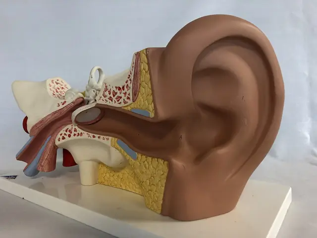
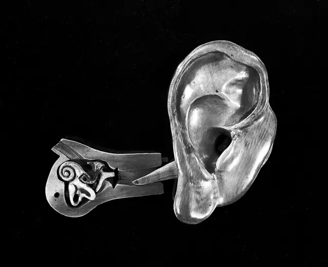
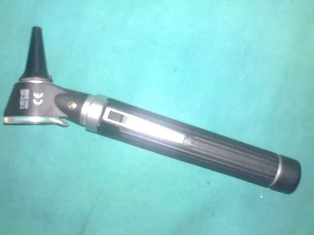

Oreille
L’oreille externe, moyenne et interne, et l’audition.
Oto-rhino-laryngologie · Nabeul
Cabinet d'ORL au Complexe Jasmin Médical, avenue Hédi Nouira, en face de la Clinique El Amen. Consultations sur rendez-vous.

La spécialité
L'oto-rhino-laryngologie concerne les organes de la sphère ORL. Présentation générale de la spécialité, à titre informatif.
L’oreille externe, moyenne et interne, et l’audition.
Les fosses nasales et les sinus.
Le pharynx, le larynx et la voix, ainsi que le cou.
Au cabinet
Liste reprise des annuaires médicaux en ligne, à confirmer par le cabinet avant publication.


Fiche du cabinet
| Lundi | à confirmer |
| Mardi | à confirmer |
| Mercredi | jusqu'à 15h00 |
| Jeudi | à confirmer |
| Vendredi | à confirmer |
| Samedi | à confirmer |
| Dimanche | à confirmer |
Horaire relevé sur la fiche Google le 30/09/2026. Autres jours et horaires complets à confirmer avec l'établissement.
Rendez-vous
Indiquez le jour et le moment souhaités : le message s'ouvre dans WhatsApp et le cabinet vous confirme le créneau.
Accès
Complexe Jasmin Médical, 2e étage, bureau 203, avenue Hédi Nouira, Nabeul (en face de la Clinique El Amen). Ouvrir dans Google Maps